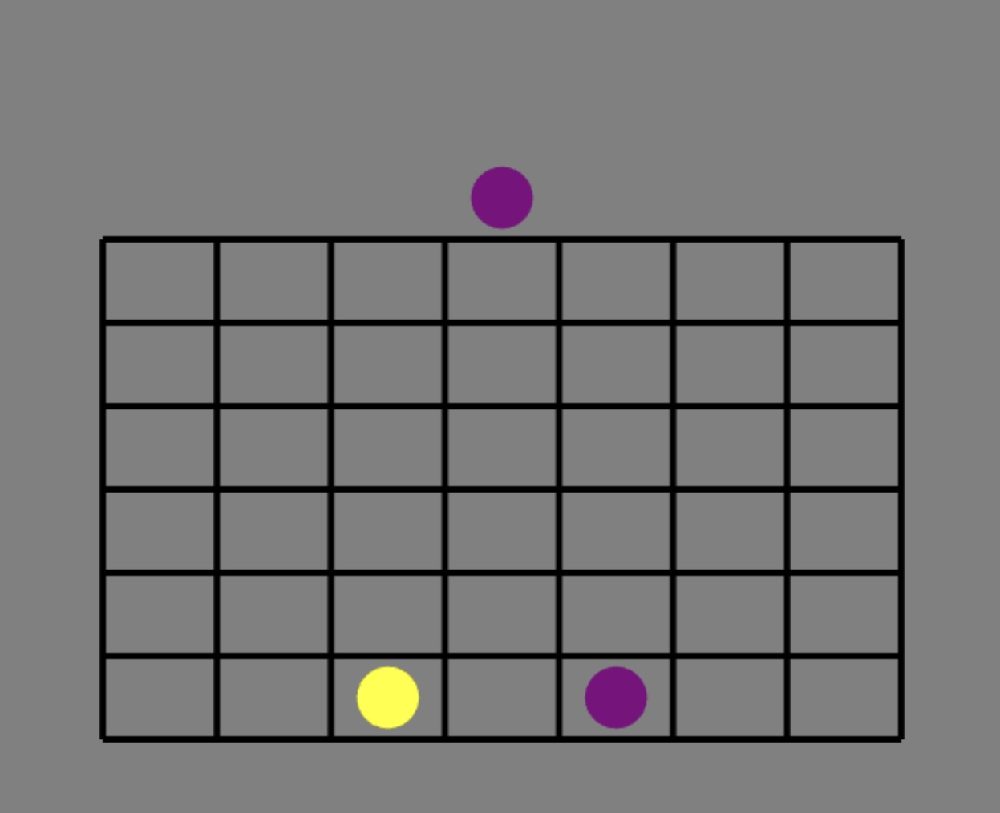
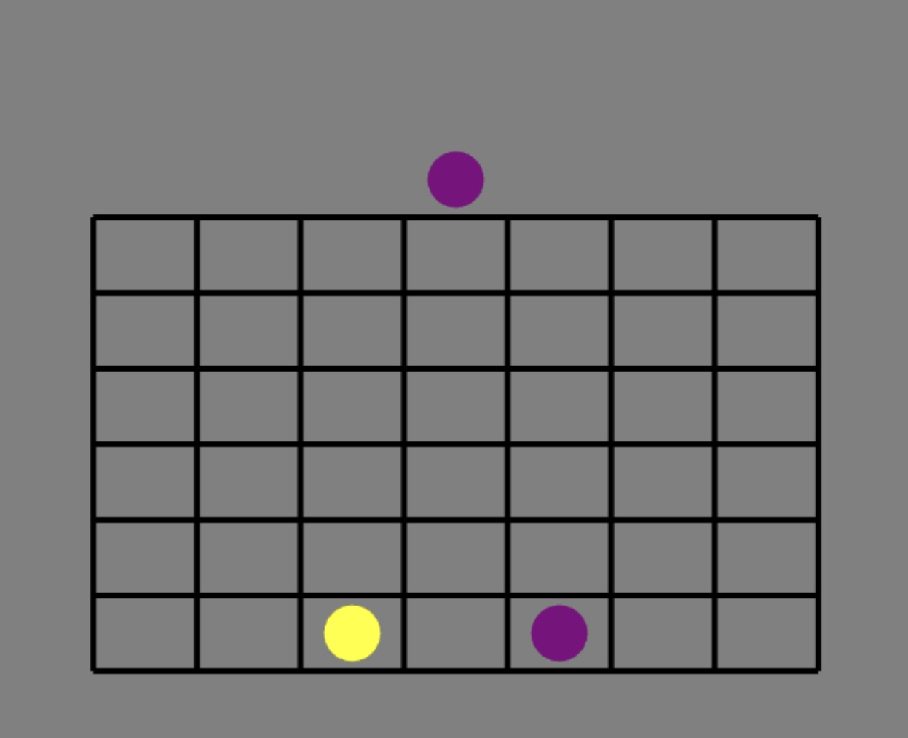

1. Each player can play a classic piece (default) or make a quantum move (by pressing “state”) in different states (by pressing “state” again).
2. A quantum move will be like playing a move in two different columns without knowing which column it is actually in until three moves later.
3. Quantum moves can be played on top of each other but interesting things may happen.
4. If a quantum move is played on top of the opposing player’s quantum move in a different state, those moves will become entangled.
5. You cannot entangle moves with yourself.
6. A horizontal move on top of a vertical move guarantees one move to be measured in that column and the other will automatically go to its paired move as demonstrated below.
7. A vertical move on top of a horizontal move means that either both pieces will be measured in that column or neither will as demonstrated below.

 
